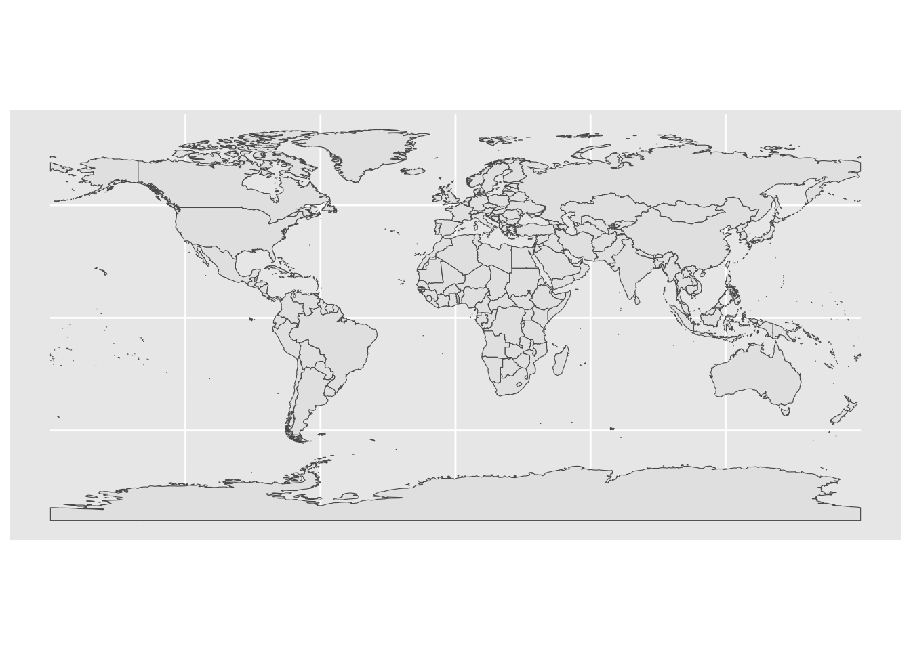

# R Markdown template inside ~/.config/rstudio/templates
# set seed for reproducibility
set.seed(42)
# Load required library
packages <- c("tidyverse",
"data.table",
"janitor",
"openxlsx",
"RColorBrewer",
"patchwork",
"parallel",
"sf",
"tmaptools")
# load library quietly and stop if library can not be loaded
for (package in packages) {
if (suppressPackageStartupMessages(require(package, character.only = TRUE))) {
} else {
stop("install required packages before running script")
}
}
# source functions if defined in separate file
files = c("R/default.fun.R")
for (file in files) {
if (file.exists(file)) {
source(file)
}
}1 World map with sf package
BACKGROUND: sf object is a special type of data frame with a geometry column that contains the spatial information of the object. The geometry column is a list of simple feature geometry objects. The sf object can be plotted using geom_sf() from ggplot2.
# function ne_countries() from rnaturalearth package
sf.world = rnaturalearth::ne_countries(scale = "medium", returnclass = "sf")
as_tibble(sf.world)## # A tibble: 242 × 169
## featurecla scalerank labelrank sovereignt sov_a3 adm0_dif level type tlc
## <chr> <int> <int> <chr> <chr> <int> <int> <chr> <chr>
## 1 Admin-0 cou… 1 3 Zimbabwe ZWE 0 2 Sove… 1
## 2 Admin-0 cou… 1 3 Zambia ZMB 0 2 Sove… 1
## 3 Admin-0 cou… 1 3 Yemen YEM 0 2 Sove… 1
## 4 Admin-0 cou… 3 2 Vietnam VNM 0 2 Sove… 1
## 5 Admin-0 cou… 5 3 Venezuela VEN 0 2 Sove… 1
## 6 Admin-0 cou… 6 6 Vatican VAT 0 2 Sove… 1
## 7 Admin-0 cou… 1 4 Vanuatu VUT 0 2 Sove… 1
## 8 Admin-0 cou… 1 3 Uzbekistan UZB 0 2 Sove… 1
## 9 Admin-0 cou… 1 4 Uruguay URY 0 2 Sove… 1
## 10 Admin-0 cou… 3 6 Federated… FSM 0 2 Sove… 1
## # ℹ 232 more rows
## # ℹ 160 more variables: admin <chr>, adm0_a3 <chr>, geou_dif <int>,
## # geounit <chr>, gu_a3 <chr>, su_dif <int>, subunit <chr>, su_a3 <chr>,
## # brk_diff <int>, name <chr>, name_long <chr>, brk_a3 <chr>, brk_name <chr>,
## # brk_group <chr>, abbrev <chr>, postal <chr>, formal_en <chr>,
## # formal_fr <chr>, name_ciawf <chr>, note_adm0 <chr>, note_brk <chr>,
## # name_sort <chr>, name_alt <chr>, mapcolor7 <int>, mapcolor8 <int>, …# plot the world map with geom_sf
ggplot() +
geom_sf(data = sf.world)
QUESTION: what is contain in 1 row of the sf.world object?
ANSWER: 1 row of the sf.world object contain the spatial information of a country. The geometry column contain the representation of the multi-polygon of the country (roughly speaking)
2 Manipulate sf object
BACKGROUND: sf object can be manipulated using dplyr package. The group_by() function can be used to group the object by a column, and the summarise() function can be used to summarise the object. The st_union() function can be used to union the geometry of the object.
# manipulate sf object ----
# group by continent
sf.continent = sf.world %>%
st_make_valid() %>%
group_by(continent) %>%
summarise(geometry = st_union(geometry))
as_tibble(sf.continent)## # A tibble: 8 × 2
## continent geometry
## <chr> <MULTIPOLYGON [°]>
## 1 Africa (((44.45186 -12.07139, 44.4126 -12.09297, 44.40703 -1…
## 2 Antarctica (((-45.83418 -60.54346, -45.93481 -60.52656, -45.9563…
## 3 Asia (((42.61045 15.33228, 42.62451 15.36797, 42.60234 15.…
## 4 Europe (((16.66631 42.95991, 16.69639 42.93369, 16.73887 42.…
## 5 North America (((-72.91924 18.86147, -73.06914 18.93203, -73.17061 …
## 6 Oceania (((144.7799 13.41113, 144.9408 13.57031, 144.9097 13.…
## 7 Seven seas (open ocean) (((-5.659717 -15.9709, -5.6625 -15.91279, -5.707861 -…
## 8 South America (((-64.58135 -54.75273, -64.6251 -54.77363, -64.68921…# plot continent map with geom_sf
ggplot(sf.continent, aes(fill = continent)) +
geom_sf() +
theme(legend.position = "bottom")# funny, all of russia is classified as europe # just live with it, that's the data we haveQUESTION: Any idea of why there are some distorted horizontal lines on the map?
ANSWER: The distorted horizontal lines are the results of a polygon crossing the date-line. So ggplot just draw a line across lon:-180:180
3 Investigate the distorted polygon:
It cross the date-line at lon=180 or lon=-180
3.1 Create sf object for a line with projection
NOTE: sf have various classes for spatial object, the most common are sfc and sf. sfc is a collection of simple feature geometry objects, while sf is a data frame with a sfc column and other columns that describe the attribute of the geometry.
THEY ARE NOT EQUIVALENT
QUESTION: what is the difference between: sfg, sfc, and sf?
ANSWER:
sfgis a simple feature geometry objectsfcis a list of simple feature geometry objects; with projection, bounding box INFOsfis a data frame with asfccolumn and other columns that describe the attribute of the geometry. IMPORTANT: this is wheredplyrfunction can be used to manipulate the object
# create a sf line that have lon = 180 from matrix
sf.line = matrix(c(180, -90, 180, 90), ncol = 2, byrow = TRUE) %>%
# convert into simple feature geometry # NOTE: `sfg`
st_linestring() %>%
# convert into simple feature geometry list column # NOTE: `sfc`
st_sfc() %>%
# convert into simple feature object # NOTE: `sf`
st_sf(crs = 4326)3.2 Run sf operation to find which polygon cross the date line
There are a lot of sf operation that can be used to manipulate or check the spatial object.
READ MORE on all available geometry function in the cheatsheet of the sf package documentation: https://r-spatial.github.io/sf/
# which polygon cross the date line
sf.cross = sf.world %>%
# argument sparse = FALSE is required to make the function return a logical vector
filter(st_crosses(geometry, sf.line,
sparse = FALSE)) %>%
# select only field of interest # reminder that the column `geometry` will always be kept for object of class sf
select(geounit, continent)## although coordinates are longitude/latitude, st_crosses assumes that they are
## planar## Warning: Using one column matrices in `filter()` was deprecated in dplyr 1.1.0.
## ℹ Please use one dimensional logical vectors instead.
## This warning is displayed once every 8 hours.
## Call `lifecycle::last_lifecycle_warnings()` to see where this warning was generated.# print geounit and continent of the polygons that cross the date line
sf.cross %>% as_tibble()## # A tibble: 0 × 3
## # ℹ 3 variables: geounit <chr>, continent <chr>, geometry <GEOMETRY [°]>3.3 Plot the polygon before it is distorted
NOTE: this is the sf object, so we can use geom_sf to plot it.
You will see that we ignore aesthetic mapping in aes() entirely and just used the default options because it convenient
ggplot(sf.cross) +
geom_sf()QUESTION
4 How do we fix the distorted polygon
Break up the polygon that cross the date line with st_break_antimeridian function
# manipulate sf object ----
# THIS IS THE FIX FOR ST_BREAK_ANTIMERIDIAN
# turn off the google s2geometry.io library # and use the GEOS library
sf_use_s2(FALSE)
# group by continent
sf.continent = sf.world %>%
# this is the fix for st_union ----
st_make_valid() %>%
group_by(continent) %>%
summarise(geometry = st_union(geometry)) %>%
# this is the important fix for distorted polygon that cross the date line ----
st_break_antimeridian(lon_0 = 0)
# plot continent map with geom_sf
fig = ggplot(sf.continent, aes(fill = continent)) +
geom_sf() +
# don't forget that this is still a ggplot object than can be modified with theme
theme(legend.position = "bottom",
panel.background = element_rect(fill = "lightskyblue"))
fig5 Add geom_point layer to the map (ggplot)
Creating sf object for the data is too much WORK. We can just use a data frame with x and y coordinate and use geom_point to plot it.
# generate random points with x and y coordinate
# it is saved inside a data frame
df.coord = tibble(x = runif(10, -180, 180),
y = runif(10, -90, 90))
df.coord## # A tibble: 10 × 2
## x y
## <dbl> <dbl>
## 1 149. -7.61
## 2 157. 39.4
## 3 -77.0 78.2
## 4 119. -44.0
## 5 51.0 -6.79
## 6 6.87 79.2
## 7 85.2 86.1
## 8 -132. -68.9
## 9 56.5 -4.50
## 10 73.8 10.9# add geom_point layer to the map
fig2 = fig +
geom_point(data = df.coord,
aes(x = x, y = y),
# this is important, make sure this layer don't inherit the aes from the previous layer
inherit.aes = FALSE,
color = "red", size = 3) +
# do remember that `df.coord` have no projection, so we need to specify it
# easiest way to do is to use coord_sf(default_crs = 4326) # just use the default 4326 for any coordinate without projection crs
coord_sf(default_crs = 4326)
fig26 Change the projection of the map
I like the Robinson projection, so let’s do this with coord_sf
This can be a little complicated with the way map string work.
Take a little bit of time and google to get the correct string for the projection you want.
6.1 Robinson projection
# declare the string for the robinson projection
robinson_str = "+proj=robin +lon_0=0 +x_0=0 +y_0=0 +datum=WGS84 +units=m +no_defs"
fig2 +
coord_sf(crs = robinson_str,
default_crs = 4326)## Coordinate system already present. Adding new coordinate system, which will
## replace the existing one.6.2 Fixing the background
LOOK: the map work, but the background do not fit the area of water anymore, because we use theme(panel.background), which always change the color of the rectangle area.
BUT: we want to color the oval area of the map.
QUESTION: how do we fix this?
ANSWER: The idea is add ANOTHER layer to represent the projected map: make an oval shape with geom_sf and color it.
# there is a function to create a oval shape in the `tmaptools` package
sf.ocean = tmaptools::bb_earth(projection = "WGS84",
stepsize = 1,
earth.datum = 4326) %>%
st_as_sf()
# plot the oval shape as the 1st layer
fig.rob = ggplot() +
# we need alpha = 0.5 because otherwise we cannot see the lon-lat grid on the panel layer
geom_sf(data = sf.ocean, fill = "lightskyblue", alpha = 0.5) +
# add the sf.continent layer
geom_sf(data = sf.continent, aes(fill = continent)) +
# add the geom_point layer
geom_point(data = df.coord,
aes(x = x, y = y),
inherit.aes = FALSE,
color = "red", size = 3) +
# change the projection
coord_sf(crs = robinson_str,
default_crs = 4326) +
# theme for ggplot object
theme(legend.position = "bottom",
panel.background = element_blank(),
panel.grid = element_line(color = "grey"),
axis.title = element_blank())
fig.rob
6.3 zoom in to Australia and change to conic projection
# proj4 string for the conic projection above Australia
conic_str = '+proj=lcc +lat_1=-18 +lat_2=-36 +lat_0=-25 +lon_0=135 +ellps=aust_SA +units=m +no_defs'
# bounding box of australia extracted from sf object of countries
bbox = sf.world %>%
filter(geounit == "Australia") %>%
st_bbox()
bbox## xmin ymin xmax ymax
## 112.90820 -54.74922 158.95889 -10.05176# plot the map with the new projection
fig.rob +
# change the projection
coord_sf(crs = conic_str,
default_crs = 4326,
xlim = c(bbox$xmin, bbox$xmax), ylim = c(bbox$ymin, bbox$ymax))## Coordinate system already present. Adding new coordinate system, which will
## replace the existing one.LOOK at the shape of the longitude and latitude grid, it is CONIC projection. YAY!
7 Idea for tutorial
Extract Singapore from sf.world and plot it on the map with mercator projection